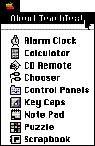

|
The Apple MenuThe Apple menu contains all items that the user puts in the Apple Menu Items folder. They appear in alphabetical order in the menu, separated from the About menu item by a gray line. This menu also displays small icons for each item. Figure 4-59 shows a sample Apple menu. AboutYou can include an About item in the Apple menu. When the user chooses this item, display a dialog box that contains your application's name, version number, and copyright information. You can include additional information in the dialog box if you find it necessary. Include an OK button in the dialog box so that the user can dismiss the dialog box after reading it. If you don't include an OK button, remove the dialog box automatically after a few seconds. Figure 4-60 shows a sample dialog box. |